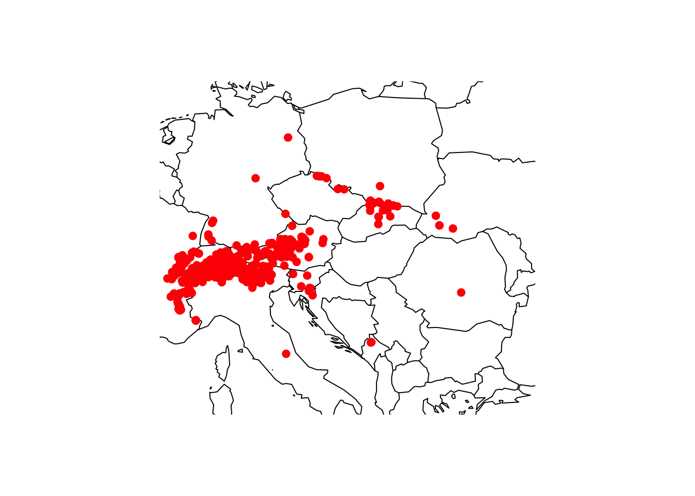

RStudio project
Open the RStudio project that we created in the first session. I recommend to use this RStudio project for the entire module and within the RStudio project create separate R scripts for each session.
# Session b1: Species data
and save the file in your folder “scripts” within your project folder,
e.g. as “b1_SpeciesData.R”Many different types of biodiversity data exist, e.g. from standardised monitoring schemes, citizen science platforms, or expert knowledge. Each comes with own challenges. Here, we will concentrate on GBIF as publicly available source for terrestrial species occurrence data.
GBIF stands for Global Biodiversity Information Facility. GBIF defines itself as “an international network and research infrastructure funded by the world’s governments and aimed at providing anyone, anywhere, open access to data about all types of life on Earth”. GBIF contains worldwide point records from observations as well as museum records or other contributions. The data are thus not standardised and often it is unclear which spatial resolution the data represent. To understand this, let’s look at some example under https://www.gbif.org/.
We will use the package rgbif to search and retrieve
data from GBIF. A good tutorial to this package is offered here. Remember
that we can install new packages with the function
install.packages(). Alternatively, the dismo
package offers the function gbif() to download gbif
records. Robert Hijmans, who wrote the raster and the dismo package,
also offers great tutorials on his website: http://rspatial.org.
library(rgbif)
# Check out the number of occurrences found in GBIF:
occ_count()## [1] 3017593553# number of observations:
occ_count(basisOfRecord='OBSERVATION')## [1] 17280868# number of occurrences reported for Germany. Check https://countrycode.org/ for country codes
occ_count(country='DE')## [1] 60284975# number of observations reported for Germany:
occ_count(country='DE',basisOfRecord='OBSERVATION')## [1] 104521As example, I picked the Alpine shrew (Sorex alpinus) for today, a small mammal species occurring in Central and Suuth-Eastern European mountain ranges. Its conservation status is near threatened (Link to IUCN redlist).
Figure 1. The Alpine shrew (Sorex alpinus). Picture by Dr. Richard Kraft, downloaded from https://kleinsaeuger.at/sorex-alpinus.html.
We first check whether any synonyms exist and how many records exist for the species. Download will be slow for high numbers of records.
# Check for synonyms
name_suggest(q='Sorex alpinus', rank='species')## Records returned [1]
## No. unique hierarchies [0]
## Args [q=Sorex alpinus, limit=100, rank=species, fields1=key,
## fields2=canonicalName, fields3=rank]
## # A tibble: 1 × 3
## key canonicalName rank
## <int> <chr> <chr>
## 1 2435986 Sorex alpinus SPECIES# Check number of records - here filtered to those with coordinate information
occ_search(scientificName = "Sorex alpinus", hasCoordinate=T, limit = 10)## Records found [1540]
## Records returned [10]
## No. unique hierarchies [1]
## No. media records [10]
## No. facets [0]
## Args [hasCoordinate=TRUE, occurrenceStatus=PRESENT, limit=10, offset=0,
## scientificName=Sorex alpinus, fields=all]
## # A tibble: 10 × 91
## key scientificName decimalLatitude decimalLongitude issues datasetKey
## <chr> <chr> <dbl> <dbl> <chr> <chr>
## 1 4880822152 Sorex alpinus … 47.8 13.2 "" 8a863029-…
## 2 4920858783 Sorex alpinus … 47.8 13.2 "bri,… c1492854-…
## 3 4926239461 Sorex alpinus … 46.5 8.84 "cdc,… 50c9509d-…
## 4 4851859068 Sorex alpinus … 46.4 12.2 "cdc,… 50c9509d-…
## 5 4901479303 Sorex alpinus … 47.4 11.0 "cdc,… 50c9509d-…
## 6 4901510667 Sorex alpinus … 47.4 10.9 "cdc,… 50c9509d-…
## 7 4881209229 Sorex alpinus … 47.8 13.2 "" 8a863029-…
## 8 4920797996 Sorex alpinus … 47.8 13.2 "bri,… c1492854-…
## 9 4875417397 Sorex alpinus … 46.6 7.78 "cdc,… 50c9509d-…
## 10 4911053760 Sorex alpinus … 49.2 20.2 "cdc,… 50c9509d-…
## # ℹ 85 more variables: publishingOrgKey <chr>, installationKey <chr>,
## # hostingOrganizationKey <chr>, publishingCountry <chr>, protocol <chr>,
## # lastCrawled <chr>, lastParsed <chr>, crawlId <int>, basisOfRecord <chr>,
## # individualCount <int>, occurrenceStatus <chr>, lifeStage <chr>,
## # taxonKey <int>, kingdomKey <int>, phylumKey <int>, classKey <int>,
## # orderKey <int>, familyKey <int>, genusKey <int>, speciesKey <int>,
## # acceptedTaxonKey <int>, acceptedScientificName <chr>, kingdom <chr>, …Test yourself
What does the argument hasCoordinate=T do? Look up the
help page and explain.
One of the most interesting items from the outputs is the “Records
found” at the very top of the output. Please be aware that
occ_search() will not allow to download more than 100’000
records. If the GBIF data contain more, then you can set additional
filters (e.g. set time period with argument year or
geographic extent with arguments decimalLatitude and
decimalLongitude) or split the area into spatial tiles (by
setting geographic extent) and download the tiles separately.
GBIF data also contain a lot of extra information about observer,
basis of record etc. Take a look at the arguments you can set in
?occ_search to get an overview. For example, we can limit
the data to those observations that were done by humans:
occ_search(scientificName = "Sorex alpinus", hasCoordinate=T, basisOfRecord='HUMAN_OBSERVATION', limit = 10)## Records found [733]
## Records returned [10]
## No. unique hierarchies [1]
## No. media records [10]
## No. facets [0]
## Args [hasCoordinate=TRUE, occurrenceStatus=PRESENT, limit=10, offset=0,
## scientificName=Sorex alpinus, basisOfRecord=HUMAN_OBSERVATION, fields=all]
## # A tibble: 10 × 91
## key scientificName decimalLatitude decimalLongitude issues datasetKey
## <chr> <chr> <dbl> <dbl> <chr> <chr>
## 1 4880822152 Sorex alpinus … 47.8 13.2 "" 8a863029-…
## 2 4926239461 Sorex alpinus … 46.5 8.84 "cdc,… 50c9509d-…
## 3 4851859068 Sorex alpinus … 46.4 12.2 "cdc,… 50c9509d-…
## 4 4901479303 Sorex alpinus … 47.4 11.0 "cdc,… 50c9509d-…
## 5 4901510667 Sorex alpinus … 47.4 10.9 "cdc,… 50c9509d-…
## 6 4881209229 Sorex alpinus … 47.8 13.2 "" 8a863029-…
## 7 4875417397 Sorex alpinus … 46.6 7.78 "cdc,… 50c9509d-…
## 8 4911053760 Sorex alpinus … 49.2 20.2 "cdc,… 50c9509d-…
## 9 4901019930 Sorex alpinus … 49.2 19.0 "cdc,… 50c9509d-…
## 10 4903977845 Sorex alpinus … 46.3 11.7 "cdc,… 50c9509d-…
## # ℹ 85 more variables: publishingOrgKey <chr>, installationKey <chr>,
## # hostingOrganizationKey <chr>, publishingCountry <chr>, protocol <chr>,
## # lastCrawled <chr>, lastParsed <chr>, crawlId <int>, basisOfRecord <chr>,
## # individualCount <int>, occurrenceStatus <chr>, lifeStage <chr>,
## # taxonKey <int>, kingdomKey <int>, phylumKey <int>, classKey <int>,
## # orderKey <int>, familyKey <int>, genusKey <int>, speciesKey <int>,
## # acceptedTaxonKey <int>, acceptedScientificName <chr>, kingdom <chr>, …Now, let’s download the records and plot them. We had a bit less than
600 records for the shrew, and use this as limit. Of
course, the map will only help us judging the data quality if we have a
rough idea where the species should occur. So, look up the species on
the web first!
gbif_shrew <- occ_search(scientificName = "Sorex alpinus", hasCoordinate=T, basisOfRecord='HUMAN_OBSERVATION', limit = 600)
# We are just interested in the data frame containing the records
gbif_shrew <- gbif_shrew$data
library(maps)
maps::map('world',xlim=c(5,30), ylim=c(40,55))
points(gbif_shrew$decimalLongitude, gbif_shrew$decimalLatitude, col='red', pch=19)
You should always critically assess the quality of your data. This also holds true for GBIF data. Look at the map again, do all records look plausible?
Not all coordinates seem to be correct, and we thus need to
cross-check these. Robert Hijmans provides some code in his
dismo tutorials. We will
here use the new package CoordinateCleaner (Zizka et al. (2019); see tutorials here). The
function clean_coordinates() allows cleaning geographic
coordinates using different cross-checks. Here, we first compare whether
the coordinates for each entry match the country code provided (test
centroids) for each entry and are no outliers (test
outliers). Also, we test for vicinity to a biodiversity
institution like botanical or zoological gardens (test
ìnstitutions and radius inst_rad), and for
duplicates (test duplicates). There are many more tests
that you can check in the help pages
?clean_coordinates.
library(CoordinateCleaner)# We use only those data entries with coordinate information - Note that you don't need this if you have used the hasCoordinate=T in the occ_search() function:
gbif_shrew <- subset(gbif_shrew, !is.na(decimalLatitude))
# We now clean the coordinates and check for outliers - see ?clean_coordinates for more options
gbif_shrew_cleaned_coord <- clean_coordinates(gbif_shrew, lon="decimalLongitude", lat="decimalLatitude", countries="countryCode", tests=c("centroids", "outliers", "duplicates", "institutions"), inst_rad = 1000)## Testing coordinate validity## Flagged 0 records.## Testing country centroids## Flagged 1 records.## Testing geographic outliers## Flagged 3 records.## Testing biodiversity institutions## Flagged 0 records.## Testing duplicates## Flagged 135 records.## Flagged 139 of 600 records, EQ = 0.23.# Plot world map
maps::map('world',xlim=c(5,30), ylim=c(40,55))
# Plot all gbif points downloaded
points(gbif_shrew$decimalLongitude, gbif_shrew$decimalLatitude, col='red', pch=19)
# Plot all remaining points after cleaning
points(gbif_shrew$decimalLongitude[gbif_shrew_cleaned_coord$.summary], gbif_shrew$decimalLatitude[gbif_shrew_cleaned_coord$.summary], col='blue', pch=18)# Store the cleaned point locations in a new object
gbif_shrew_cleaned <- gbif_shrew[gbif_shrew_cleaned_coord$.summary,]Test yourself
Look up the options in clean_coordinates() and think
about why I chose the specific tests and options.
Have a look at Zizka et al. (2019) and the examples by Robert Hijmans (http://rspatial.org for finding out about other typical problems with GBIF and how to deal with these.
Finally, save your data, for example by writing the final data frame to file or by saving the R object(s).
save(gbif_shrew_cleaned,file='data/gbif_shrew_cleaned.RData')As homework, solve the exercises in the blue box below.
Exercise:
Pick a species of your choice, look it up on the web (www.gbif.org),
and then download and clean the GBIF data using
occ_search() and clean_coordinates().
Although we will concentrate on terrestrial species in the
practicals, I would at least like to mention that marine data are
available from OBIS, the the Ocean Biodiversity Information System.
Currently, the OBIS database holds more than 135 000 marine species. We
can access the database using the package robis. This can
be installed from github.
library(devtools)
install_github("iobis/robis")You can visually check out the data on the OBIS Mapper webpage. Occurrence can
be downloaded from the website or using the function
occurrence() from robis package.
library(robis)
# Download OBIS data for the sea otter
otter <- occurrence('Enhydra lutris')
# Map data
maps::map('world')
points(otter$decimalLongitude, otter$decimalLatitude, col='blue', pch=18)Showing the occurrence records in our typically Atlantic-centred world view is a little confusing. We can obtain a Pacific-centred view by simply wrapping the maps.
maps::map("world", wrap=c(0,360))
points(ifelse(otter$decimalLongitude<0,otter$decimalLongitude+360,otter$decimalLongitude), otter$decimalLatitude, col='blue', pch=18)Overall, the data look quite plausible. In general, however, we also
need to pay attention to data cleaning in OBIS data. As the OBIS data
follow the same data standards as GBIF data, we can also use the package
CoordinateCleaner for data cleaning.
# We test for spatial outliers and remove duplicates
otter_cleaned_coord <- clean_coordinates(otter, lon="decimalLongitude", lat="decimalLatitude", tests=c("duplicates","outliers"))## Testing coordinate validity## Flagged 0 records.## Testing geographic outliers## Flagged 1352 records.## Testing duplicates## Flagged 3825 records.## Flagged 4282 of 5745 records, EQ = 0.75.# remove the flagged records
otter_cleaned <- otter[otter_cleaned_coord$.summary,]